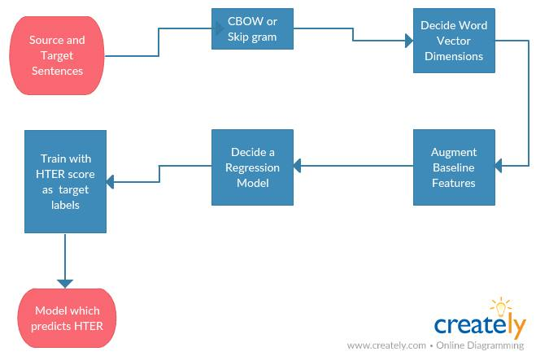
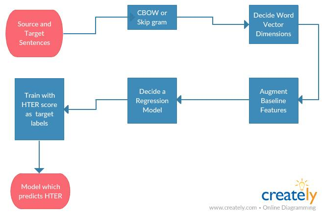
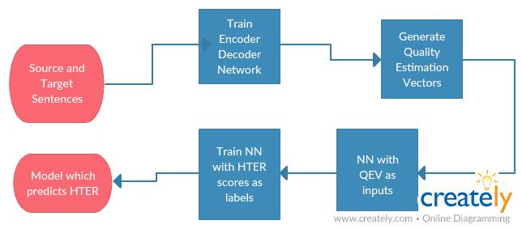

Professor: Vasudeva Verma
Mentor: Nisarg Jhaveri
Team Members:
- V Harsha Vardhan
- Neeraj Battan
- Kartavya Gupta
Project Links to artifacts
Pearson Score for Baseline model:
For German-English: 0.44
For English-German: 0.39
Project Description:
The aim of our project is to determine the quality of a machine translated text by predicting the HTER (Human-targeted Translation Error Rate) scores.
Dataset was provided by the organizers of Shared Task: Quality Estimation
We are using two approaches for calculating the quality estimation score:
Improving Machine Translation Quality Estimation with Neural Network Features
Work Flow

Pearson Score:
Work Flow

Pearson Score:
For German-English: 0.45
For English-German: 0.43
A Recurrent Neural Networks Approach for Estimating the Quality of Machine Translation Output
Work Flow

Pearson Score:
For German-English: 0.63
For English-German: 0.55